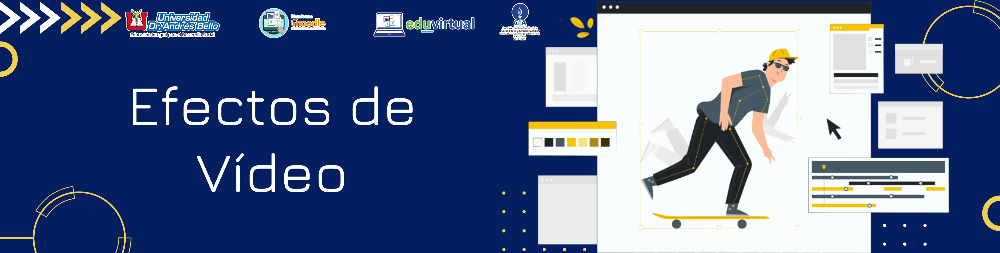

Efectos de Videos, Títulos, Track Mate, Speed Motion
1. Edición de Vídeo
Contenido
Premiere Pro incluye en su interfaz efectos para vídeo e inclusive para sonido, los que se pueden aplicar a clips de vídeo que desee editar. Los efectos tienen la capacidad de agregar características visuales o auditivas especiales o agregarle un atributo poco común. Se puede crear o aplicar ajustes preestablecidos para todos los efectos, se cuenta con efectos fijos, estándar, basados en pistas y en clip, entre otros.
1. Efectos Fijos
Cada clip que agregue a un panel Línea de tiempo tiene efectos fijos aplicados previamente o integrados que controlan las propiedades inherentes de un clip y se muestran en el panel Controles de efectos siempre que se selecciona el clip. Estos efectos fijos son los siguientes:
- Movimiento: Incluye propiedades que permiten animar, girar y escalar los clips, ajustar su propiedad antiparpadeo, o componerlos con otros clips.
- Opacidad: Permite reducir la opacidad de un clip para su uso en efectos como superposiciones, fundidos y disoluciones.
- Reasignación del tiempo: Le permite ralentizar, acelerar o reproducir a la inversa, así como congelar un fotograma en cualquier de un clip. Proporciona un control preciso de la aceleración o deceleración de dichos cambios.
- Volumen: Controla el volumen de cualquier clip que contiene audio.
2. Efectos Estándar
Son efectos adicionales que deben aplicarse primero a un clip para crear el resultado deseado. Puede aplicar cualquier número o combinación de efectos estándar a cualquier clip de una secuencia. Permiten agregar características especiales o editar el vídeo Los efectos incluidos en la lista del panel Efectos dependen de los archivos de efectos de la subcarpeta de idioma de la carpeta de plugins de Premiere Pro. Puede ampliar el repertorio de efectos si agrega archivos o paquetes de plugins compatibles con Adobe que otros fabricantes tengan disponibles.
3. Efectos basados en Pistas y en Clips
Todos los efectos de vídeo (tanto efectos fijos como estándar) están basados en clips. Modifican clips individuales. Puede aplicar un efecto basado en clips a varios clips al mismo tiempo mediante la creación de una secuencia anidada. Pueden aplicarse efectos de audio a clips o a pistas. Para aplicar los efectos basados en pistas utilice el Mezclador de audio. Si agrega fotogramas clave al efecto, posteriormente puede ajustarlo en el mezclador de audio o un panel Línea de tiempo.
Aplicación de efectos:
- Para aplicar uno o más efectos a un único clip, seleccione los efectos y arrástrelos al clip en la Línea de tiempo.
- Para aplicar uno o más efectos a varios clips, seleccione primero los clips. Presione Control (Windows) o Comando (Mac OS) y haga clic en cada uno de los clips relevantes en la línea de tiempo. A continuación, arrastre un efecto o un grupo seleccionado de efectos a cualquiera de los clips seleccionados.
- Seleccione un clip y, a continuación, haga doble clic en el efecto.
- Para aplicar un efecto de audio, arrastre el efecto hasta un clip de audio o la parte de audio de un clip de vídeo. No es posible aplicar efectos de audio a un clip si está habilitada la opción Mostrar volumen de pista o Mostrar fotogramas clave de pista para la pista de audio.
- Si el clip se selecciona en el panel Línea de tiempo, puede arrastrar el efecto directamente al panel Controles de efectos.
- En el panel Controles de efectos, haga clic en el triángulo para mostrar las opciones del efecto y, a continuación, especifique los valores de las opciones.
Obra publicada con Licencia Creative Commons Reconocimiento Compartir igual 4.0